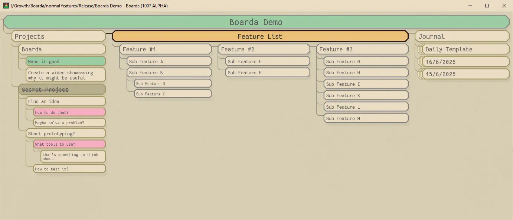

Text Notes with A Flexible Layout
Release Notes Features Overview
Create Cards
Create a new card using Ctrl+Enter. Multiline text is supported. Finish editing with Esc
Delete and Undo
Delete cards with Delete undo with Ctrl+z
Flip Layout
Toggle between horizontal and vertical layout for any card using v
Move Cards
Move a card around using Mouse Left Click and Drag or Shift+←↑↓→
Indent
Indent cards to create hierarchies using Tab and Ctrl+Tab
Zoom In and Out
Zoom into a card using Alt+↓ and zoom out to see the bigger picture using Alt+↑
Collapse
Hide or show children of a card using c. This is useful to reduce noise
Change Status
Cycle between
Bookmarks
Bookmark a card using Ctrl+b. Navigate between bookmarks using Ctrl+Tab
Search
Search with Ctrl+f and navigate with F3
Duplicate
Duplicate a card with Ctrl+d. This can be used to create daily templates. Set the card's text to today's date using Ctrl+t
Navigate Siblings
Navigate between siblings using Ctrl+ ← →. This can be used to compare adjacent cards